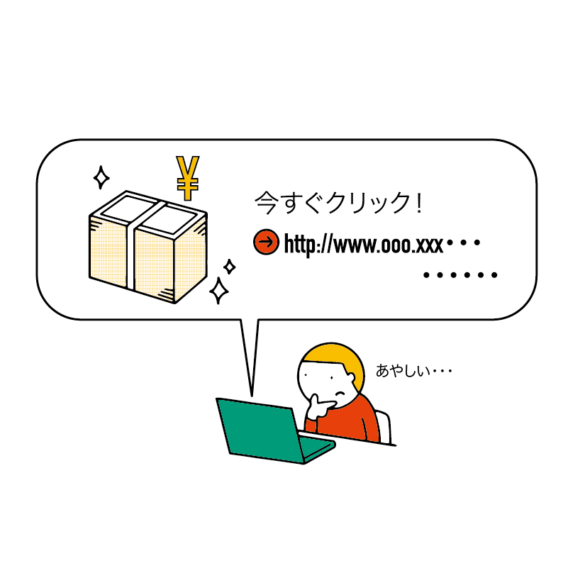
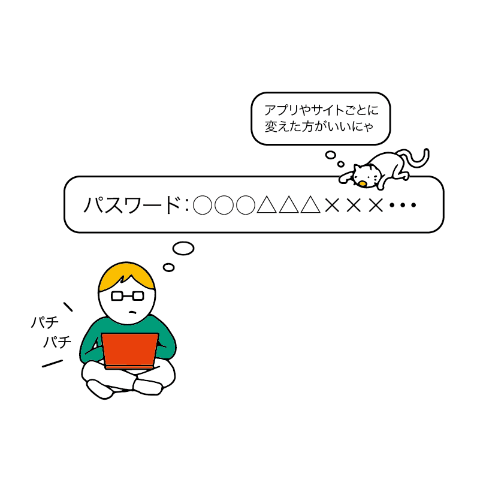

マルウェアから身を守ろう
マルウェア（malware）とは、「悪意あるソフトウェア」を意味する造語で、コンピューターウイルスなどのことを指すものです。
この章では、実際に発生した事件などを基に、マルウェアからの身の守り方を学んでいきます。
マルウェアの種類
マルウェアはいくつかの種類に分けられます。ここでは一部を紹介します。
マルウェアの作者（犯人）が「このマルウェアはこの種類です」と宣言することはほとんど無いため、セキュリティ会社などによって分類されます。
また、「トロイの木馬型のスパイウェア」のように、いくつかの性質を併せ持つマルウェアも多々あります。
コンピューターウイルス
マルウェア全体を指して「コンピューターウイルス」と呼ぶこともありますが、ここでは厳密な意味での「コンピューターウイルス」を説明します。
単体では存在できず、他のファイルに「感染」することで機能します。感染したファイルを開くことで悪意ある動作（データの破壊や個人情報の送信など）や他のファイルへの感染が行われます。
単体で存在できるものを ワーム といいます。
トロイの木馬
//TODO イラスト
トロイの木馬 は一見すると便利なアプリなのですが、実はこっそりと悪意ある動作を行うものです。
ギリシャ神話のトロイ戦争に由来します。
ギリシャとトロイに分かれて戦闘していたところ、ギリシャは不利になっていきました。ギリシャ側は秘策として、巨大な木馬を作ります。
実はこの巨大な木馬（トロイの木馬）の中にはギリシャ兵が隠れているのですが、トロイはそれに気づかず騙され、木馬を陣地に招き入れてしまいました。同時に、ギリシャ軍は木馬だけを残し、撤退したと見せかけます。
トロイはギリシャが木馬を置いて撤退したので、自分たちが勝利したのだと思い、宴会を開きました。そうしてトロイの人たちが酔っ払って寝静まったとき、中から隠れていたギリシャ兵が飛び出して攻撃を開始します。
その後、トロイは滅亡してしまいました。
スパイウェア
//TODO イラスト
その名の通り、スパイ行為をするマルウェアです。
侵入したパソコンのキーボード入力内容やスクリーンショット、ファイルなどを外部（犯人）に送信します。
個人情報や企業秘密などを盗むために作られており、目立った破壊活動をするのではなく、こっそりと動き続けるのが特徴です。
そのため、スパイウェアが侵入してしまっていることに気づかずにパソコンを使い続けてしまう事もあります。
ランサムウェア
//TODO イラスト
ランサム（ransom）とは、英語で「身代金」を意味する言葉です。
パソコンに忍び込むと、パソコンの中にあるファイルを勝手に暗号化して開けなくした上で、「元通りにしてほしければ金を払え」と要求してくるものです。
なお、犯人の目的はお金を得ることだけなので、お金を払ってもファイルを元通りにしてくれるとは限りません。
企業が狙われることも多く、有名ゲームメーカーが11億円以上の金銭を要求された事例もあります。
スケアウェア
//TODO イラスト
人を脅かしてお金をだまし取ろうとするマルウェアです。
スケア（scare）とは、英語で「脅かす」「怖がらせる」という意味の言葉です。
よくある手口としては、「ウイルスが発見されました」とニセの警告を出して人を怖がらせ、「ウイルスを駆除するにはこのアプリを買う必要があります」とニセのアプリを買わせようとするものが挙げられます。
また、「あなたのパソコンに違法なファイルが発見された。金を払わなければ通報する。」などと脅してお金を騙し取るものもあります。
スケアウェアを経由してインストールさせられるニセのアプリ自体がさらに別のマルウェアであることも多いほか、一度お金を支払ってしまうと「騙しやすい人」として再び狙われることもあります。
一般的な対策
こういったマルウェアへの対策として、最低限以下のようなことに気をつけましょう。
パソコンに備わっているセキュリティ機能を活用する
現在の Windows や macOS には、セキュリティを万全にする機能が標準で搭載されています。これらをきちんと活用しましょう。
たとえば Windows や macOS からの警告が表示された際に、とりあえず無視したり「実行する」などをクリックしたりするのではなく、よく分からない場合は警告に従って実行を取りやめるようにしましょう。
セキュリティソフトを導入する
Windows や macOS 自体にも標準でセキュリティに関する機能は搭載されていますが、セキュリティソフト（ウイルス対策ソフト）をインストールすることでさらに安全性が高まります。
ただし、ネット上で導入できる「無料のセキュリティソフト」には偽物も多く存在しているため、初心者が選ぶのは難しいといえます。基本的には 家電量販店などで市販されている有料のもの を選ぶと安心でしょう。
また、セキュリティソフトをインストールした場合、入れたまま放置するのではなく、定期的に「ウイルススキャン」を行い、パソコンの中に不審なファイルなどがないかを確認しましょう。
不審なサイトを開かない
セキュリティにおいて一番重要なのは、不審なリンクをクリックしないことです。
もちろん、攻撃者もあの手この手で「まともなリンク」に見せかけているので見分けるのは難しいかもしれませんが、とにかく個人情報を入力させたり何かをダウンロード・インストールさせようとしてくるサイトは基本的に不審なものと考えてもよいでしょう。
誤ってクリックしてしまった場合、ほとんどの場合はそのサイトを閉じれば問題ありません。
もし、サイトを閉じる事ができない場合はブラウザを強制終了しましょう。
アプリは公式サイトからダウンロードする
アプリは必ず公式サイトから入手しましょう。たとえば Google Chrome であれば Google のサイト、Photoshop など Adobe のアプリであれば Adobe のサイトからダウンロードしましょう。
それ以外のサイトから入手すると、偽物やマルウェアをダウンロードさせられる恐れがあります。
また、時々「有料アプリが無料で使える」などとアピールしているサイトもありますが、それらは基本的に違法サイトです。
違法サイトを使うと犯罪になってしまうだけでなく、マルウェア付きでアプリを配布している可能性も高いので、絶対にアクセスしないようにしましょう。
パスワードは長くて難しいものにして、サイトやアプリごとに変える
アカウントのパスワードが短ければ短いほど、パスワードを当てられやすくなります。
なるべく長く、アルファベットと数字と記号を組み合わせるなど複雑なものにしましょう。
また、誕生日や電話番号といった個人情報から推測できるものにしてはいけません。
なお、Web サイトがハッキングされると、ID とパスワードの組み合わせが流出してしまうことがあります。
この場合、攻撃者は「他のサイトでも同じID（メールアドレス）とパスワードを使いまわしているはず」という推測のもと、他のサイトにログインを試みるため、どれだけ複雑なパスワードにしていても意味をなさなくなります。
そのため、パスワードはアプリや Web サイトごとに違う物を使いましょう。
「複雑なパスワードにする」「パスワードを使い回さない」という 2 つのルールを守りましょう。
サイトごとに違ったパスワードを覚えるのが難しいという場合は Google Chrome のパスワード管理機能を活用すると便利です。
パスワード管理機能を使うと、すべてのパスワードが Chrome に保存されます。一見すると危険に思えますが、きちんと暗号化されているので、短いパスワードや使い回しよりもはるかに安全です。
他にも、絶対に見られない場所（鍵の掛かる引き出しなど）にパスワードのメモを書いて入れておくのもよいでしょう。人に見られる机の上や、屋外に置き忘れるリスクのある手帳に書いてしまうのは非常に危険で、おすすめできません。
また、パソコンやスマホ上に暗号化せずに保存するのも、データが流出してしまった際に危険なのでやめておきましょう。
継続的にセキュリティについて知る
ここで説明したような、パソコンや個人情報を狙った攻撃は新たな手口がどんどん登場します。それらの手口を知ることにより、身を守れます。
もちろん、すべての手口を知るのは専門家でもないと難しいのですが、ニュースなどで取り上げられるようなものについてはきちんと目を向けるようにしましょう。
現代の社会においてパソコンをはじめとした IT 機器は生活を支える重要なものになっています。
天気予報を見たり、健康に関する情報を知ったりするのと同様に、きちんと最新情報を知るようにしましょう。
もしあなたが Twitter を利用しているなら、IPA（情報処理推進機構）という団体が発信している IPA情報セキュリティ安心相談窓口 をフォローするのもよいでしょう。
最新の攻撃手口と対策手法をわかりやすく告知してくれています。
また、会社や学校がセキュリティに関する講習を行っている場合はそれを受講することで、必要な知識を身につける事ができるでしょう。
マルウェアの侵入経路と予防方法
現実世界のウイルスには「接触感染」「飛沫感染」などの感染経路があり、それぞれ「手洗い・消毒をする」「マスクを付ける」といった対策があります。
コンピューターの世界も似ており、マルウェアの侵入経路とそれに応じた対策方法があります。上記で示した一般的な対策だけでなく、より細かい対策を見てみましょう。
メールからの侵入
悪意ある人がマルウェアを添付ファイルとしたメールを送信し、受け取った人がそれを誤って開いてしまうことによるものです。
知らない人から送られてきたメールの添付ファイルはダウンロードせず、すぐに削除しましょう。
不審なサイトからの侵入
いわゆる怪しいサイトで配布されているアプリやファイルには、マルウェアが仕込まれていることが多々あります。
マルウェアをばらまく攻撃者は、なるべく多くの人にマルウェア入りのファイルをダウンロードさせたいと考えています。そのためには、ダウンロードさせるファイルを魅力的に見せる必要があります。
「有料のものが無料で入手できる」のような、一見すると魅力的に思えるサイトやファイルを見かけた場合は要注意だと考えましょう。
ネット広告の悪用による侵入
Web サイトやアプリには広告が埋め込まれており、日常的によく見かけるはずです。
広告の多くはきちんとチェックされた上で配信されているのですが、ごくまれに広告業者のチェック漏れなどにより、不正な広告 が紛れ込んでしまうことがあります。
そういった不正な広告の中には、「本当は広告なのに、まるで Web サイトの一部であるかのように擬態したもの」「勝手に不審なサイトを開くもの」など、極めて悪質なものが存在します。
擬態した広告
広告が載せられている Web サイトに擬態し、ユーザが間違ってクリックするのを狙ったものです。
//TODO 例示の画像
勝手にリンクを開く広告
広告システムのバグなどを利用し、クリックせずとも勝手に不正なサイトを開く広告もあります。
不正なサイトでマルウェアをダウンロードさせます。
まともなサイト・アプリならこのような不正広告を利用しないので、意図しないサイトが突然開いて何かのダウンロードを提案された場合は基本的にマルウェアだと判断し、そのサイトをすぐに閉じましょう。
もしマルウェアに感染したら？
セキュリティに十分気をつけていたとしても、マルウェアに感染してしまうリスクはゼロではありません。
万が一、感染してしまった場合どうするべきかを知っておきましょう。
まずはネットとの接続を遮断する
マルウェアが外部に個人情報を送信したり、家族・知り合い・社内などに感染を拡大するのを防ぐために、まずネットワーク（Wi-Fi や有線LAN）から切断しましょう。
会社や学校であれば管理者に速やかに報告する
会社や学校の場合、IT・情報システムを管理する部門に速やかに報告し、相談しましょう。
会社によってはセキュリティ専門のチームが存在していることもあります。
自分でパソコンを修復するのは困難と考える
現実のウイルスでも「どんなウイルスも防いでくれるワクチン」や「どんなウイルスにも効く薬」は存在しません。
パソコンでもこれは同様で、マルウェアの種類によって対応方法は変わります。どういう対応をするべきか見分けるのは専門家でないと難しいといえます。
そのため、初心者が「マルウェアに感染したパソコンを元通りに戻す」のはかなり難しく、「マルウェアに感染したらパソコンは元通りにならない」と考えておいてもよいでしょう。
復元するには専門業者に依頼する必要がある状況も考えられます。
また、凶悪なマルウェアはパソコンやデータを完全に壊してしまうため、専門家でも修復できないことが多数あります。
唯一の修復手段はリカバリー
基本的に修復が難しいなかで、唯一、パソコンを救出する手段が「リカバリー」です。
リカバリーとは、パソコンを初期状態に戻す作業のことです。
パソコンの修理をメーカーや家電量販店に依頼した場合に実施してもらえるほか、説明書などを読みながら自分で行うこともできます。
ただし、初期状態になるとマルウェアのみならず、全てのファイルも消滅してしまいます。
パソコン自体は使い続けられますが、ファイルは諦めてしまうしかありません。
マルウェアに備えてバックアップをしておく
マルウェアに感染し、リカバリーをする可能性があると考えて、ファイルをバックアップするとよいでしょう。
バックアップ とは、パソコンとは別の場所にファイルのコピーをすることです。
これにより、パソコン本体に保存されているファイルが失われたとしても、バックアップした場所からパソコンにファイルを再びコピーし、復活させられます。
ファイルのバックアップ方法はこの教材の付録で学ぶことができます。
クレジットカードの利用明細をチェックし、必要に応じて止める
パソコンの修理とは別に、個人情報やお金に関する情報を守る必要も出てきます。
パソコンでクレジットカードの情報を入力した場合、番号などが流出することがあります。
すべてのマルウェアがクレジットカード情報を盗み出すわけではありませんが、攻撃者の多くは「お金になること」を狙ってマルウェアを仕掛けているため、狙われている可能性が高いと言えます。
そのため、自分のパソコンがマルウェアに感染した時点でクレジットカードは盗まれた可能性がある可能性が高いと考え、カードの明細を頻繁にチェックしましょう。もし、不正利用が確認できたらカード会社に一時停止の連絡をしましょう。
自分の使っているカード会社の名前と「紛失・盗難」でネットを検索すると、カード会社の緊急連絡先を調べられます。
まとめ
- マルウェアには種類がある
- 一般的な対策方法
- パソコンのセキュリティ機能を活用
- セキュリティソフトを導入
- 不審なサイトを開かない
- セキュリティに関する情報を継続的に学ぶ
- 侵入経路別の対策方法
- メール
- 添付ファイルに警戒する
- 不審なサイト
- 不審なサイトからファイルをダウンロードしない
- 広告の悪用
- Webサイトの中身のように擬態したもの
- 勝手に別のサイトを開くもの
- メール
- もしマルウェアに感染したら
- ネットから切断し、管理者に速やかに報告する
- データが犠牲になる可能性が高い
- 定期的にバックアップを取り、データを復元できるようにしておく
- 個人情報の流出を想定し、クレジットカードを止めるなどの対応も必要